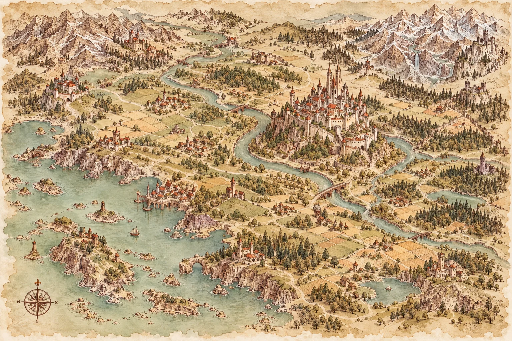

Od pierwszej iskry do własnego świata
Wykuj
swoją grę.
Aplikacja do tworzenia
własnych gier planszowych.
Kuźnia w budowie. Wyobraźnia już działa.
Tu pomysły nabierają kształtów
Z wyobraźni. Na planszę.
Twoja kraina to dopiero początek przygody.

Świat jest twój. Narzędzia są po to, by go stworzyć.Koncepcja interfejsu · ForgeTheBoard jest w trakcie tworzenia
Rozpal wyobraźnię. Resztę wykuj po swojemu.
Twój świat.
Twój warsztat.
Kraina, do której chce się wracać. Karta, która zmienia wszystko. Zasady, które łączą ludzi przy stole.
Tak wyobrażamy sobie twoją przyszłą kuźnię.
To wizja możliwości, które chcemy rozwijać.
Nie są jeszcze dostępnymi funkcjami aplikacji.
Wybrzeże Gryfów
Las Szeptów
Nie każda ścieżka chce
zostać odnaleziona.
Twierdza Brzasku
Tam, gdzie kończy się droga,
zaczyna się opowieść.
Przystań Mgły
Wyrusz tam, gdzie mapa
jeszcze milczy.
Wybrzeże Gryfów
Każda wielka wyprawa ma swój początek.Cel wyprawy
Odkryj trzy krainy i wróć do Twierdzy Brzasku z historią wartą opowiedzenia.
Twoja tura
- Wybierz szlak i przesuń swój pionek.
- Odkryj kartę napotkanej krainy.
- Zdecyduj: ruszasz dalej czy rozbijasz obóz?
Twierdza Brzasku
Tu zaczyna się
twoja przygoda.
Przykładowe elementy fikcyjnej gry „Wybrzeże Gryfów”
Nie musisz mieć wszystkiego. Wystarczy iskra.
Twój pomysł.
Wspólna przygoda.
Zaczyna się od bohatera, krainy albo jednej sprytnej zasady. Potem twój świat ożywa przy wspólnym stole. Dla takich pomysłów powstaje ForgeTheBoard.
- 1
Zacznij od iskry
Świat, historia, mechanika. Nie musisz mieć gotowego planu.
- 2
Nadaj jej kształt
Połącz pomysły w mapę, karty i zasady własnej gry.
- 3
Pomyśl o wspólnym stole
Bo najlepsza część tworzenia to chwila, gdy zaczyna się gra.
Wieści z kuźni
Dobre rzeczy
potrzebują ognia.
I trochę czasu.
Aplikacja dopiero powstaje. Dziś pokazujemy kierunek, w którym chcemy ją rozwijać.
Co mogę zobaczyć już teraz?
Wizję warsztatu i przykładowe materiały gry „Wybrzeże Gryfów”. To autorskie koncepcje przygotowane na potrzeby tej strony, a nie ekrany działającej aplikacji.
Czy muszę umieć projektować gry?
ForgeTheBoard powstaje z myślą zarówno o twórcach, jak i miłośnikach planszówek, którzy chcą stworzyć swoją pierwszą grę. Pomysł jest dobrym początkiem.
Kiedy będzie można zacząć?
Nie ogłosiliśmy jeszcze daty udostępnienia aplikacji. Rejestracja nie jest obecnie podłączona — przycisk „Wejdź do kuźni” pokazuje informację o etapie projektu.
Przy tym stole jest miejsce na twoją wyobraźnię.
Najlepsze światy
jeszcze nie powstały.
Twój może być następny.
ForgeTheBoard powstaje. Ty możesz już zacząć marzyć.